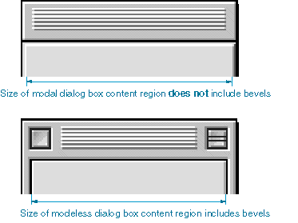
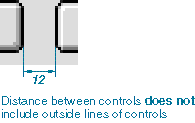

Measurement Guidelines
A dialog box consists of a content region and a structure region. The content region contains the elements of the dialog box that communicate information and allow the user to enter information. The content region of a dialog box determines its usable size. The structure region is the frame-like area surrounding the content region outside its border line. Depending on the type of dialog box, the structure region can contain a title, a close box, and/or a collapse box.In designing modal or movable modal dialog boxes, do not include any bevels in the measurement. However, when you measure distances in modeless dialog boxes, count as part of the content region the bevel inside the black line. Figure 3-12 shows the content region sizes of a modal and a modeless dialog box.
Figure 3-12 Size of dialog box content regions

In measuring the space between controls, exclude the outside border lines of the control from the measurement. When you measure a control itself, include the border of the control in the measurement. Figure 3-13 illustrates how to measure the distance between controls.
Figure 3-13 Measuring distance between controls
